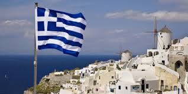

Ελλάδα
Η Ελλάδα (στην καθαρεύουσα Ελλάς), συνταγματικό όνομα Ελληνική Δημοκρατία, είναι χώρα της νοτιοανατολικής Ευρώπης στο νοτιότερο άκρο της Βαλκανικής χερσονήσου. Συνορεύει στα βορειοδυτικά με την Αλβανία, στα βόρεια με τη Βόρεια Μακεδονία και τη Βουλγαρία και στα βορειοανατολικά με την Τουρκία. Έχει ακτές στην Ανατολική Μεσόγειο και βρέχεται ανατολικά από το Αιγαίο, δυτικά από το Ιόνιο και νότια από το Λιβυκό. Η Ελλάδα κατέχει την 11η θέση στις χώρες με τη μεγαλύτερη ακτογραμμή στα 13.676 χιλιόμετρα, καθώς έχει πλήθος νησιών που υπολογίζεται, αναλόγως τα κριτήρια, στα 2.500 με τα 165–227 να κατοικούνται. Βρίσκεται στην 97η θέση στην κατάταξη των χωρών του κόσμου σύμφωνα με την έκτασή τους. Ο πληθυσμός της χώρας την 1η Ιανουαρίου 2017 ήταν 10.757.300, σύμφωνα με τις επίσημες εκτιμήσεις της Ευρωπαϊκής Στατιστικής Υπηρεσίας[5]. Πρωτεύουσα και μεγαλύτερη πόλη της είναι η Αθήνα.
Η Ελλάδα έγινε μέλος της Ευρωπαϊκής Ένωσης (τότε Ευρωπαϊκών Κοινοτήτων) το 1981 και της Ευρωζώνης το 2001. Είναι μέλος του ΝΑΤΟ από το 1952 και ιδρυτικό μέλος του ΟΗΕ (1945), του Οργανισμού Οικονομικής Συνεργασίας και Ανάπτυξης (ΟΟΣΑ), του Παγκόσμιου Οργανισμού Εμπορίου (ΠΟΕ), του Οργανισμού για την Ασφάλεια και Συνεργασία στην Ευρώπη (ΟΑΣΕ) και του Διεθνούς Οργανισμού Γαλλοφωνίας. Η μοναδική πολιτιστική κληρονομιά της Ελλάδας, η μεγάλη τουριστική βιομηχανία, ο εξέχων τομέας της ναυτιλίας και η γεωστρατηγική σημασία της την ταξινομούν ως μέση δύναμη. Είναι η μεγαλύτερη οικονομία στα Βαλκάνια και σημαντικός επενδυτής στη περιοχή. Θεωρείται ανεπτυγμένη χώρα με υψηλό κατά κεφαλήν εισόδημα και πολύ υψηλό δείκτη ανθρώπινης ανάπτυξης.